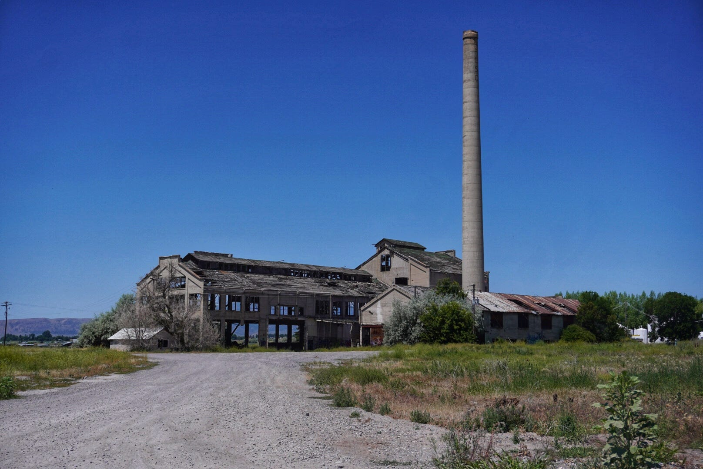

<!DOCTYPE html>
<html lang="en">
  <head>
    <meta charset="UTF-8" />
    <meta name="viewport" content="width=device-width, initial-scale=1.0" />
    <link rel="icon" href="images/chamberIcon.ico" />
    <meta
      name="description"
      content="WDD-231-Web Frontend Development, Johnathan Babb, course assignment portal"
    />
    <meta name="author" content="John Babb" />
    <meta property="og:title" content="Assignment Page for Johnathan Babb" />
    <meta property="og:type" type="website" />
    <meta
      property="og:url"
      content="https://warmace101.github.io/wdd231/chamber/directory.html"
    />
    <meta property="image" content="images/preston_hero_large.webp" />
    <script src="scripts/getDate.js" defer></script>
    <script src="scripts/hamburgerMenu.js" defer></script>
    <link rel="stylesheet" href="styles/base.css" />
    <link rel="stylesheet" href="styles/larger.css" />

    <title>Preston Chamber of Commerce</title>
    <main class="discover-page">
        <aside class="sidebar">
            <div id="visitMessage">Welcome! Let us know if you have any questions.</div>
            <div class="sidebar-content">
                <!-- Other sidebar content like demographics, events, etc. -->
            </div>
        </aside>
        <section class="main-content">
            <div class="photo-gallery">
                
                
                
                
                
                
            </div>
        </section>
    </main>
    <footer>
        <p>
          &copy; 2024 Chamber of Commerce. All rights reserved. | Web Front-End
          Development | Johnathan Babb
        </p>
        <button id="closeFooterBtn" class="close-footer-btn">Close Footer</button>
      </footer>
  
    <script src="discover.js"></script>
</body>
</html>